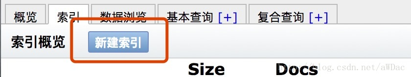
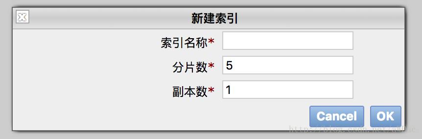

ES是一个全文搜索引擎，同时也是一个NoSQL数据库，其存放数据方便与检索数据性能优越，受到普遍欢迎。
ES架构
参考文章：架构及原理
ES地理数据操作
参考文章：Elasticsearch地理位置总结
ES实际操作
建立Index
一般有两种方式
- ES Head通过界面化操作，直接可以建立Index:

 - 通过ES API可以创建Index。一般可以选择Java/Python的ES接口API，可以实现该功能。
建立Type
虽然ES允许事先不建立Index，就可以直接插入数据。但这种方式存在安全隐患，比如类型转换，类型设置等方面的隐患。最好的方式就是实现创建Index/Type，定义好需要插入数据的类型，方便后期检索。
curl -XPUT 'ES Server IP:9200/Test?pretty' -H 'Content-Type: application/json' -d' |
插入数据
这里使用Java API实现将数据插入ES的功能，关于ES Client的使用，可以参考文章：https://www.elastic.co/guide/en/elasticsearch/client/java-api/current/index.html
选择ES的目的
- 通过ES，可以实现去重的功能：因为不同位置爬去POI，可能重复；
- 通过ES的地理位置，可以方便的获取某个GPS坐标点附近的POI信息，也可以计算距离信息等；
- ES查询性能优越，数据压缩存储，相比MongoDB数据库占用更少的空间。
本博客所有文章除特别声明外，均采用 CC BY-SA 4.0 协议 ，转载请注明出处！